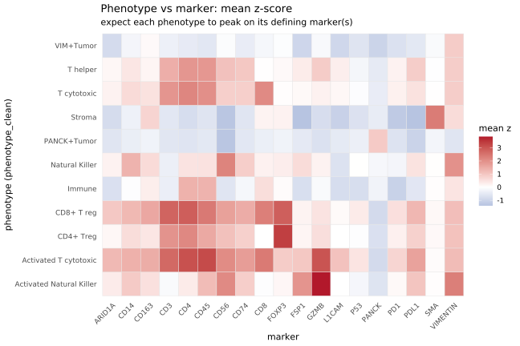
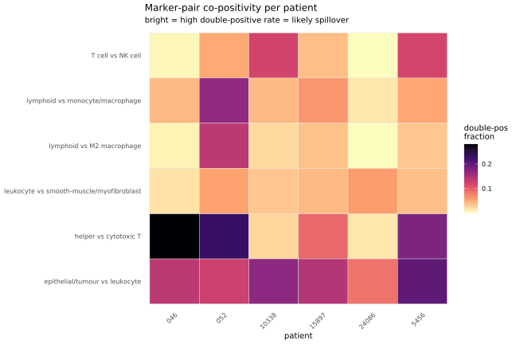
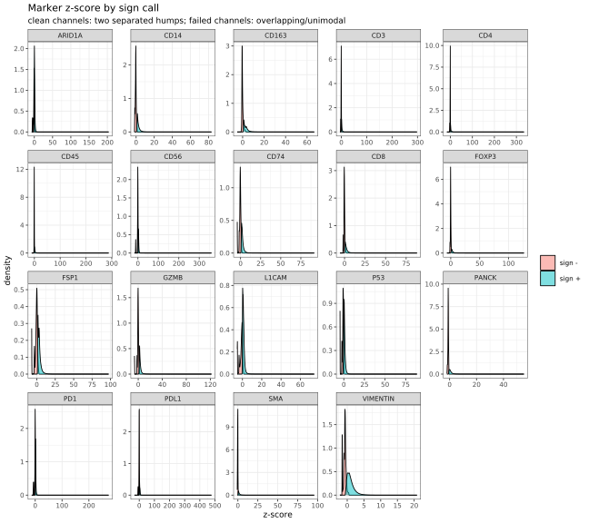
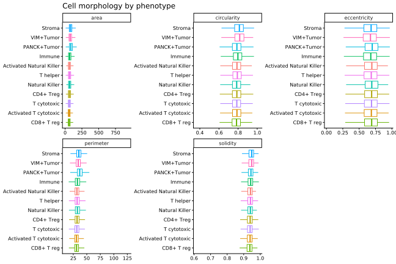

Last updated: 2026-07-05
Checks: 7 0
Knit directory: ihc_method/
This reproducible R Markdown analysis was created with workflowr (version 1.7.2). The Checks tab describes the reproducibility checks that were applied when the results were created. The Past versions tab lists the development history.
Great! Since the R Markdown file has been committed to the Git repository, you know the exact version of the code that produced these results.
Great job! The global environment was empty. Objects defined in the global environment can affect the analysis in your R Markdown file in unknown ways. For reproduciblity it’s best to always run the code in an empty environment.
The command set.seed(20260630) was run prior to running
the code in the R Markdown file. Setting a seed ensures that any results
that rely on randomness, e.g. subsampling or permutations, are
reproducible.
Great job! Recording the operating system, R version, and package versions is critical for reproducibility.
Nice! There were no cached chunks for this analysis, so you can be confident that you successfully produced the results during this run.
Great job! Using relative paths to the files within your workflowr project makes it easier to run your code on other machines.
Great! You are using Git for version control. Tracking code development and connecting the code version to the results is critical for reproducibility.
The results in this page were generated with repository version 5c95785. See the Past versions tab to see a history of the changes made to the R Markdown and HTML files.
Note that you need to be careful to ensure that all relevant files for
the analysis have been committed to Git prior to generating the results
(you can use wflow_publish or
wflow_git_commit). workflowr only checks the R Markdown
file, but you know if there are other scripts or data files that it
depends on. Below is the status of the Git repository when the results
were generated:
Ignored files:
Ignored: .Rproj.user/
Ignored: data/
Ignored: renv/library/
Ignored: renv/staging/
Note that any generated files, e.g. HTML, png, CSS, etc., are not included in this status report because it is ok for generated content to have uncommitted changes.
These are the previous versions of the repository in which changes were
made to the R Markdown (analysis/benchmarks.Rmd) and HTML
(docs/benchmarks.html) files. If you’ve configured a remote
Git repository (see ?wflow_git_remote), click on the
hyperlinks in the table below to view the files as they were in that
past version.
| File | Version | Author | Date | Message |
|---|---|---|---|---|
| Rmd | 5c95785 | bolt3x | 2026-07-05 | :sparkles: added some more on lineage exclusivity |
| Rmd | b70ccb2 | sceriff0 | 2026-07-05 | :rocket: created repo scaffold |
Internal QC of the IHC readout — validation that
needs no external reference, only ihc_data. Traces a fault
backwards through the pipeline:
_sign a clean threshold on a bimodal signal? (validates the
individual stains)mk_long <- ihc_marker_long(ihc_data) |>
filter(!is.na(phenotype_clean), phenotype_clean != "Unknown")
cat("cells:", dplyr::n_distinct(mk_long$cell_id),
"| markers:", dplyr::n_distinct(mk_long$marker),
"| phenotypes:", dplyr::n_distinct(mk_long$phenotype_clean), "\n")cells: 404376 | markers: 19 | phenotypes: 11 Mean marker z-score per phenotype. A trustworthy readout shows a block/diagonal structure — each cell type lights up its defining marker(s) and little else.
conc <- mk_long |>
group_by(phenotype_clean, marker) |>
summarise(mean_z = mean(zscore, na.rm = TRUE),
pct_pos = mean(pos, na.rm = TRUE), .groups = "drop")
ggplot(conc, aes(marker, phenotype_clean, fill = mean_z)) +
geom_tile(colour = "grey90") +
scale_fill_gradient2(low = "#2166ac", mid = "white", high = "#b2182b",
midpoint = 0, name = "mean z") +
labs(title = "Phenotype vs marker: mean z-score",
subtitle = "expect each phenotype to peak on its defining marker(s)",
x = "marker", y = "phenotype (phenotype_clean)") +
theme_minimal(base_size = 11) +
theme(axis.text.x = element_text(angle = 45, hjust = 1),
panel.grid = element_blank())
# Encode the expected defining marker(s) per phenotype and check it is the top
# (or near-top) signal. Flags phenotypes whose defining marker is not their max.
expected <- tibble::tribble(
~phenotype_clean, ~marker,
"PANCK+Tumor", "PANCK",
"VIM+Tumor", "VIMENTIN",
"T helper", "CD4",
"T cytotoxic", "CD8",
"Activated T cytotoxic", "CD8",
"CD4+ Treg", "FOXP3",
"CD8+ T reg", "FOXP3",
"Natural Killer", "CD56",
"Activated Natural Killer", "CD56",
"Immune", "CD45",
"Stroma", "SMA"
)
check <- conc |>
group_by(phenotype_clean) |>
mutate(rank_z = rank(-mean_z)) |>
inner_join(expected, by = c("phenotype_clean", "marker")) |>
transmute(phenotype_clean, defining_marker = marker,
mean_z = round(mean_z, 2), rank_of_defining = as.integer(rank_z),
pass = rank_z <= 2) |>
arrange(rank_of_defining |> desc())
knitr::kable(check, caption = "Is each phenotype's defining marker among its top-2 signals?")| phenotype_clean | defining_marker | mean_z | rank_of_defining | pass |
|---|---|---|---|---|
| Activated T cytotoxic | CD8 | 2.40 | 5 | FALSE |
| Activated Natural Killer | CD56 | 2.10 | 3 | FALSE |
| CD8+ T reg | FOXP3 | 2.86 | 2 | TRUE |
| Immune | CD45 | 1.36 | 2 | TRUE |
| T cytotoxic | CD8 | 2.10 | 2 | TRUE |
| CD4+ Treg | FOXP3 | 3.38 | 1 | TRUE |
| Natural Killer | CD56 | 2.22 | 1 | TRUE |
| PANCK+Tumor | PANCK | 0.94 | 1 | TRUE |
| Stroma | SMA | 2.37 | 1 | TRUE |
| T helper | CD4 | 1.89 | 1 | TRUE |
| VIM+Tumor | VIMENTIN | 0.91 | 1 | TRUE |
Cell lineages that biology keeps separate should not co-stain in the same cell. Excess co-positivity is a direct signal of optical spillover between touching cells or mis-segmentation (one mask capturing two cells). This generalises the single PANCK⁺/CD45⁺ check into a panel of literature-backed mutually-exclusive marker pairs, each with the rare biological exception noted so the QC flags excess co-positivity, not the known baseline.
CD45⁺ cells among tumour-typed cells, and PANCK⁺ cells among immune-typed cells — both should be ~0 if the phenotyping respects the tumour/immune divide.
immune_ph <- c("Immune", "T helper", "T cytotoxic", "Activated T cytotoxic",
"CD4+ Treg", "CD8+ T reg", "Natural Killer", "Activated Natural Killer")
excl <- ihc_data |>
mutate(patient_id = norm_id(patient_id),
is_tumor_ph = str_detect(replace_na(phenotype_clean, ""), "Tumor"),
is_immune_ph = phenotype_clean %in% immune_ph,
panck_pos = is_pos(PANCK_sign),
cd45_pos = is_pos(CD45_sign))
spill <- excl |>
group_by(patient_id) |>
summarise(
n_cells = n(),
cd45pos_in_tumorph = if (any(is_tumor_ph)) mean(cd45_pos[is_tumor_ph], na.rm = TRUE) else NA_real_,
panckpos_in_immune = if (any(is_immune_ph)) mean(panck_pos[is_immune_ph], na.rm = TRUE) else NA_real_,
.groups = "drop"
)
knitr::kable(spill, digits = 3,
caption = "Per-patient phenotype-level leakage (want ~0)")| patient_id | n_cells | cd45pos_in_tumorph | panckpos_in_immune |
|---|---|---|---|
| 046 | 405697 | 0 | 0.224 |
| 052 | 378194 | 0 | 0.263 |
| 10338 | 235328 | 0 | 0.629 |
| 15897 | 202652 | 0 | 0.308 |
| 24086 | 283631 | 0 | 0.374 |
| 5456 | 382799 | 0 | 0.603 |
Each pair is two markers biology assigns to distinct lineages.
p_b_given_a / p_a_given_b are the conditional
co-positivity rates — the fraction of one marker’s positive cells that
also call the other. These should sit near the “expected co-positivity”
column (the rare true double-positive population); values well above it
flag spillover for that pair.
# Per-cell marker positivity matrix (one logical column per marker).
sign_pos <- ihc_data |>
transmute(patient_id = norm_id(patient_id),
across(all_of(paste0(ihc_markers, "_sign")), is_pos, .names = "{.col}")) |>
rename_with(~ sub("_sign$", "", .x), ends_with("_sign"))
# Literature-backed mutually-exclusive lineage marker pairs (+ known exception).
exclusivity_pairs <- tibble::tribble(
~a, ~b, ~pair_label, ~expected_copos, ~reference,
"PANCK", "CD45", "epithelial/tumour vs leukocyte", "~0 (rare hybrid CTCs)", "Nandedkar 1998",
"CD4", "CD8", "helper vs cytotoxic T", "~3% peripheral DP-T", "Overgaard 2023 (Biomedicines)",
"CD3", "CD56", "T cell vs NK cell", "rare CD3+CD56+ NKT", "std NK/NKT gating",
"CD3", "CD14", "lymphoid vs monocyte/macrophage", "~0 distinct lineages", "flow-panel convention",
"CD3", "CD163", "lymphoid vs M2 macrophage", "~0 (lymphocytes CD163-)", "Roberts 2004",
"CD45", "SMA", "leukocyte vs smooth-muscle/myofibroblast","~0 distinct lineages", "stromal-marker convention"
) |>
# keep only pairs whose markers are both present
filter(a %in% names(sign_pos), b %in% names(sign_pos))
pair_stats <- exclusivity_pairs |>
rowwise() |>
mutate(
n_a = sum(sign_pos[[a]], na.rm = TRUE),
n_b = sum(sign_pos[[b]], na.rm = TRUE),
n_both = sum(sign_pos[[a]] & sign_pos[[b]], na.rm = TRUE),
pct_dp_all = n_both / nrow(sign_pos),
p_b_given_a = ifelse(n_a > 0, n_both / n_a, NA_real_),
p_a_given_b = ifelse(n_b > 0, n_both / n_b, NA_real_)
) |>
ungroup() |>
select(pair = pair_label, a, b, expected_copos, reference,
n_both, pct_dp_all, p_b_given_a, p_a_given_b)
knitr::kable(pair_stats, digits = 4,
caption = "Mutually-exclusive marker pairs: observed vs expected co-positivity")| pair | a | b | expected_copos | reference | n_both | pct_dp_all | p_b_given_a | p_a_given_b |
|---|---|---|---|---|---|---|---|---|
| epithelial/tumour vs leukocyte | PANCK | CD45 | ~0 (rare hybrid CTCs) | Nandedkar 1998 | 274341 | 0.1453 | 0.2542 | 0.3500 |
| helper vs cytotoxic T | CD4 | CD8 | ~3% peripheral DP-T | Overgaard 2023 (Biomedicines) | 299074 | 0.1584 | 0.4122 | 0.8176 |
| T cell vs NK cell | CD3 | CD56 | rare CD3+CD56+ NKT | std NK/NKT gating | 105146 | 0.0557 | 0.2042 | 0.9398 |
| lymphoid vs monocyte/macrophage | CD3 | CD14 | ~0 distinct lineages | flow-panel convention | 128073 | 0.0678 | 0.2487 | 0.6690 |
| lymphoid vs M2 macrophage | CD3 | CD163 | ~0 (lymphocytes CD163-) | Roberts 2004 | 82790 | 0.0438 | 0.1608 | 0.6052 |
| leukocyte vs smooth-muscle/myofibroblast | CD45 | SMA | ~0 distinct lineages | stromal-marker convention | 77133 | 0.0408 | 0.0984 | 0.4264 |
per_pat <- exclusivity_pairs |>
select(a, b, pair_label) |>
purrr::pmap_dfr(function(a, b, pair_label) {
sign_pos |>
group_by(patient_id) |>
summarise(dp = mean(.data[[a]] & .data[[b]], na.rm = TRUE), .groups = "drop") |>
mutate(pair = pair_label)
})
if (nrow(per_pat) > 0) {
ggplot(per_pat, aes(patient_id, pair, fill = dp)) +
geom_tile(colour = "grey90") +
scale_fill_viridis_c(option = "magma", direction = -1, name = "double-pos\nfraction") +
labs(title = "Marker-pair co-positivity per patient",
subtitle = "bright = high double-positive rate = likely spillover",
x = "patient", y = NULL) +
theme_minimal(base_size = 10) +
theme(axis.text.x = element_text(angle = 45, hjust = 1), panel.grid = element_blank())
}
Pairs deliberately excluded (this panel’s phenotypes
acknowledge their overlap, so co-positivity is expected, not an
artifact): PANCK/VIMENTIN (the VIM+Tumor EMT phenotype),
and CD8/FOXP3 (the CD8+ T reg phenotype).
References for the exclusivity claims:
A usable marker has a bimodal z-score (a negative
and a positive population) and a _sign call that cleanly
separates them. Bimodality: Hartigan’s dip test (if diptest
is installed) plus Sarle’s bimodality coefficient (BC > 0.555
suggests bimodality). Separation: are the _sign+ z-scores
disjoint from _sign−, and what cutoff sits between
them.
bimodality_coef <- function(x) { # Sarle's BC
x <- x[is.finite(x)]; n <- length(x)
if (n < 4) return(NA_real_)
m <- mean(x); s <- sd(x); if (s == 0) return(NA_real_)
g <- mean(((x - m) / s)^3) # skewness
k <- mean(((x - m) / s)^4) - 3 # excess kurtosis
(g^2 + 1) / (k + 3 * (n - 1)^2 / ((n - 2) * (n - 3)))
}
dip_p <- function(x) {
x <- x[is.finite(x)]
if (!requireNamespace("diptest", quietly = TRUE) || length(x) < 4) return(NA_real_)
suppressWarnings(diptest::dip.test(x)$p.value)
}
channel_qc <- ihc_marker_long(ihc_data) |>
filter(!is.na(zscore)) |>
group_by(marker) |>
summarise(
n = n(),
bc = bimodality_coef(zscore),
dip_p = dip_p(zscore),
neg_max = suppressWarnings(max(zscore[!pos], na.rm = TRUE)),
pos_min = suppressWarnings(min(zscore[pos], na.rm = TRUE)),
.groups = "drop"
) |>
mutate(
separable = is.finite(neg_max) & is.finite(pos_min) & pos_min > neg_max,
cutoff = if_else(separable, (neg_max + pos_min) / 2, NA_real_),
likely_bimodal = bc > 0.555 | (!is.na(dip_p) & dip_p < 0.05)
) |>
arrange(desc(bc))
knitr::kable(channel_qc, digits = 3,
caption = "Per-channel bimodality and sign-vs-zscore separability")| marker | n | bc | dip_p | neg_max | pos_min | separable | cutoff | likely_bimodal |
|---|---|---|---|---|---|---|---|---|
| SMA | 1888301 | 0.475 | NA | 0.700 | 0.20 | FALSE | NA | FALSE |
| PANCK | 1888301 | 0.467 | NA | -0.500 | -0.80 | FALSE | NA | FALSE |
| VIMENTIN | 1888301 | 0.466 | NA | 0.500 | -0.50 | FALSE | NA | FALSE |
| CD163 | 1888301 | 0.420 | NA | 3.100 | 0.80 | FALSE | NA | FALSE |
| CD8 | 1888301 | 0.416 | NA | 2.300 | 0.00 | FALSE | NA | FALSE |
| FOXP3 | 1888301 | 0.308 | NA | 1.900 | 0.50 | FALSE | NA | FALSE |
| CD14 | 1888301 | 0.270 | NA | 1.300 | 0.70 | FALSE | NA | FALSE |
| L1CAM | 1888301 | 0.115 | NA | 1.200 | -0.20 | FALSE | NA | FALSE |
| CD74 | 1888301 | 0.106 | NA | 1.800 | 0.70 | FALSE | NA | FALSE |
| CD4 | 1888301 | 0.104 | NA | 0.500 | -0.50 | FALSE | NA | FALSE |
| CD3 | 1888301 | 0.104 | NA | 0.800 | -0.25 | FALSE | NA | FALSE |
| CD45 | 1888301 | 0.099 | NA | 0.350 | -0.35 | FALSE | NA | FALSE |
| FSP1 | 1888301 | 0.096 | NA | 2.900 | 1.20 | FALSE | NA | FALSE |
| PDL1 | 1888301 | 0.071 | NA | 4.599 | 1.20 | FALSE | NA | FALSE |
| ARID1A | 1888301 | 0.062 | NA | 0.800 | -0.60 | FALSE | NA | FALSE |
| P53 | 1888301 | 0.040 | NA | 0.400 | -0.90 | FALSE | NA | FALSE |
| GZMB | 1888301 | 0.034 | NA | 2.000 | 1.30 | FALSE | NA | FALSE |
| PD1 | 1888301 | 0.017 | NA | 4.198 | 0.55 | FALSE | NA | FALSE |
| CD56 | 1888301 | 0.005 | NA | 4.399 | 0.90 | FALSE | NA | FALSE |
ihc_marker_long(ihc_data) |>
filter(!is.na(zscore), !is.na(sign)) |>
mutate(call = if_else(pos, "sign +", "sign -")) |>
ggplot(aes(zscore, fill = call)) +
geom_density(alpha = 0.5) +
facet_wrap(~ marker, scales = "free") +
labs(title = "Marker z-score by sign call",
subtitle = "clean channels: two separated humps; failed channels: overlapping/unimodal",
x = "z-score", y = "density", fill = NULL) +
theme_bw(base_size = 9)
Segmentation should produce cells whose shape matches their type: tumour cells larger, lymphocytes small and round (high solidity), stroma elongated (high eccentricity). Includes circularity = 4·π·area / perimeter².
morph_feats <- intersect(c("area", "perimeter", "eccentricity", "solidity"),
names(ihc_data))
morph <- ihc_data |>
filter(!is.na(phenotype_clean), phenotype_clean != "Unknown") |>
mutate(circularity = if (all(c("area", "perimeter") %in% names(ihc_data)))
4 * pi * area / perimeter^2 else NA_real_) |>
select(phenotype_clean, any_of(c(morph_feats, "circularity"))) |>
pivot_longer(-phenotype_clean, names_to = "feature", values_to = "value") |>
filter(is.finite(value))
ggplot(morph, aes(reorder(phenotype_clean, value, FUN = median), value,
colour = phenotype_clean)) +
geom_boxplot(outlier.shape = NA) +
facet_wrap(~ feature, scales = "free") +
coord_flip() +
labs(title = "Cell morphology by phenotype", x = NULL, y = NULL) +
theme_classic(base_size = 10) +
theme(legend.position = "none")
ihc_data — no external
reference, so they hold even for slides with no pathologist annotation
or matched RNA.separable = FALSE in the channel table means
_sign is not a pure threshold on _zscore
(likely thresholded on _raw instead) — inspect that
channel’s density panel before trusting its positivity calls.
sessionInfo()R version 4.3.2 (2023-10-31)
Platform: x86_64-pc-linux-gnu (64-bit)
Running under: Rocky Linux 9.5 (Blue Onyx)
Matrix products: default
BLAS/LAPACK: FlexiBLAS OPENBLAS; LAPACK version 3.11.0
locale:
[1] LC_CTYPE=C.UTF-8 LC_NUMERIC=C LC_TIME=C.UTF-8
[4] LC_COLLATE=C.UTF-8 LC_MONETARY=C.UTF-8 LC_MESSAGES=C.UTF-8
[7] LC_PAPER=C.UTF-8 LC_NAME=C LC_ADDRESS=C
[10] LC_TELEPHONE=C LC_MEASUREMENT=C.UTF-8 LC_IDENTIFICATION=C
time zone: Europe/Rome
tzcode source: system (glibc)
attached base packages:
[1] stats4 stats graphics grDevices datasets utils methods
[8] base
other attached packages:
[1] sf_1.1-1 data.table_1.18.4
[3] fs_2.1.0 readxl_1.5.0
[5] DESeq2_1.42.1 SummarizedExperiment_1.32.0
[7] Biobase_2.62.0 MatrixGenerics_1.14.0
[9] matrixStats_1.5.0 GenomicRanges_1.54.1
[11] GenomeInfoDb_1.38.8 IRanges_2.36.0
[13] S4Vectors_0.40.2 BiocGenerics_0.48.1
[15] here_1.0.2 lubridate_1.9.5
[17] forcats_1.0.1 stringr_1.6.0
[19] dplyr_1.2.1 purrr_1.2.2
[21] readr_2.2.0 tidyr_1.3.2
[23] tibble_3.3.1 ggplot2_4.0.3
[25] tidyverse_2.0.0 workflowr_1.7.2
loaded via a namespace (and not attached):
[1] tidyselect_1.2.1 viridisLite_0.4.3 farver_2.1.2
[4] S7_0.2.2 bitops_1.0-9 fastmap_1.2.0
[7] RCurl_1.98-1.19 promises_1.5.0 digest_0.6.39
[10] timechange_0.4.0 lifecycle_1.0.5 processx_3.9.0
[13] magrittr_2.0.5 compiler_4.3.2 rlang_1.2.0
[16] sass_0.4.10 tools_4.3.2 yaml_2.3.12
[19] knitr_1.51 labeling_0.4.3 S4Arrays_1.2.1
[22] classInt_0.4-11 DelayedArray_0.28.0 RColorBrewer_1.1-3
[25] KernSmooth_2.23-26 abind_1.4-8 BiocParallel_1.36.0
[28] withr_3.0.3 grid_4.3.2 git2r_0.33.0
[31] e1071_1.7-17 scales_1.4.0 cli_3.6.6
[34] rmarkdown_2.31 crayon_1.5.3 generics_0.1.4
[37] otel_0.2.0 rstudioapi_0.15.0 httr_1.4.7
[40] tzdb_0.5.0 proxy_0.4-29 DBI_1.3.0
[43] cachem_1.1.0 zlibbioc_1.48.2 parallel_4.3.2
[46] cellranger_1.1.0 XVector_0.42.0 vctrs_0.7.3
[49] Matrix_1.6-5 jsonlite_2.0.0 callr_3.7.6
[52] hms_1.1.4 locfit_1.5-9.12 jquerylib_0.1.4
[55] units_1.0-1 glue_1.8.1 codetools_0.2-20
[58] ps_1.9.3 stringi_1.8.7 gtable_0.3.6
[61] later_1.4.8 pillar_1.11.1 htmltools_0.5.9
[64] GenomeInfoDbData_1.2.11 R6_2.6.1 rprojroot_2.1.1
[67] evaluate_1.0.5 lattice_0.22-9 renv_1.2.3
[70] httpuv_1.6.12 bslib_0.9.0 class_7.3-23
[73] Rcpp_1.1.1-1.1 SparseArray_1.2.4 whisker_0.4.1
[76] xfun_0.58 getPass_0.2-4 pkgconfig_2.0.3